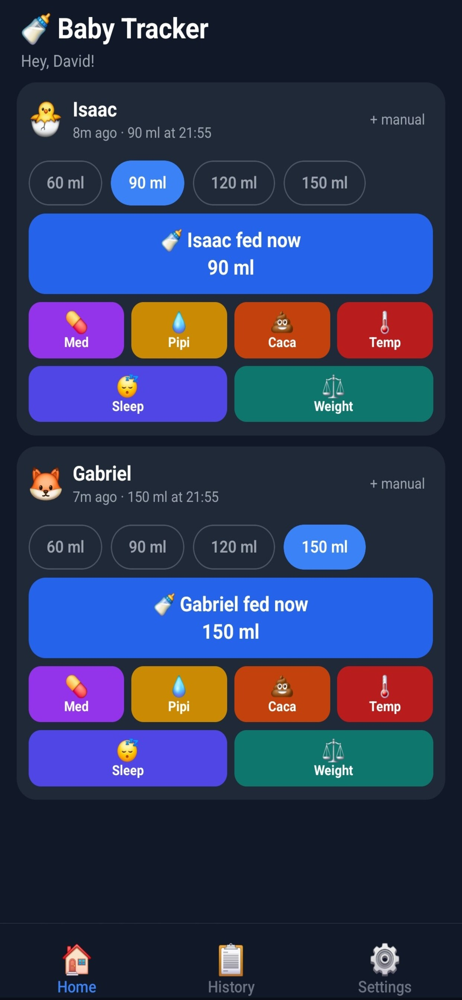
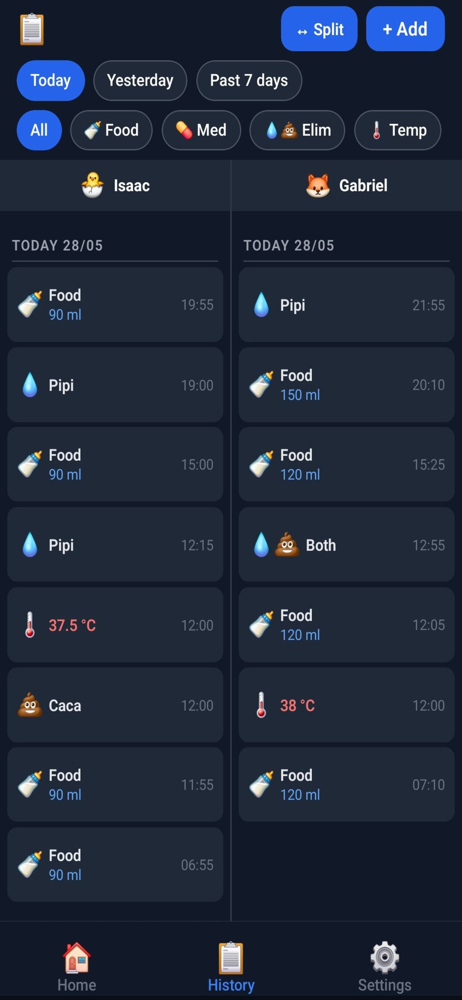
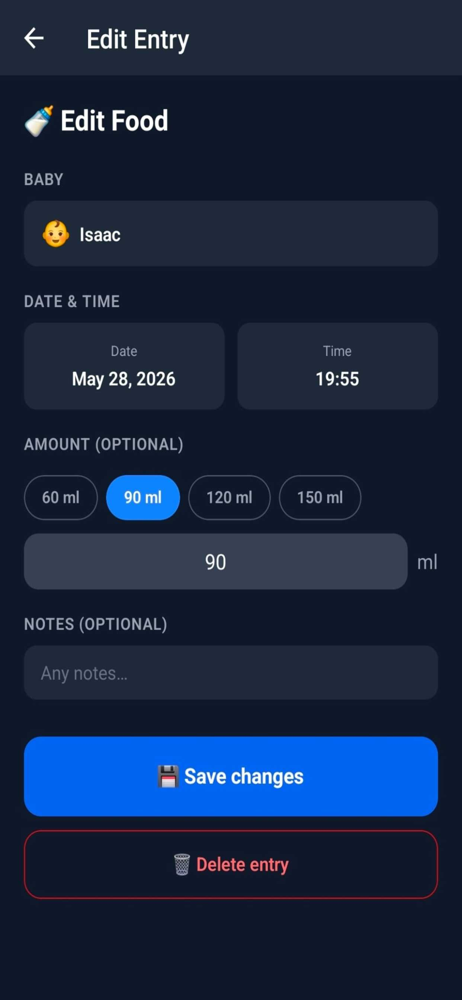
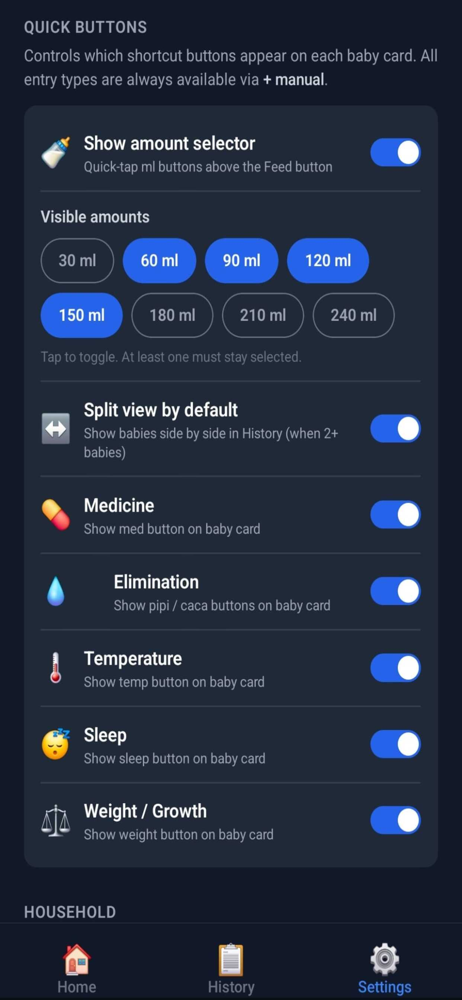
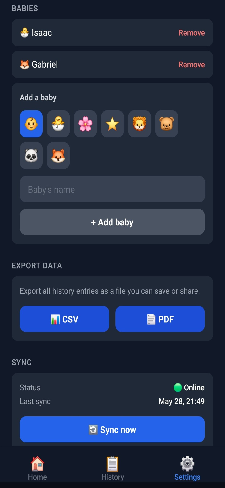

Full Stack Developer with 10+ years of experience across enterprise software, cloud-native platforms, and mobile development. Civil engineer with a specialisation in biomedical sciences and image processing, bringing a rigorous, analytical approach to software architecture. Deep expertise in .NET ecosystems and Azure cloud, currently a key developer on large-scale energy management microservices at Elia (Belgian TSO). Passionate about shipping products end-to-end — from infrastructure to mobile apps. Trilingual (EN / FR / NL), fast learner, and active open-source contributor.
Core developer on mission-critical energy management platforms for the Belgian transmission system operator.
- Contributed to 50+ ASP.NET Core microservices enabling flexible energy consumption & green energy production (Belgian & German markets)
- Actively drove refactoring to Mediator Pattern and migration to Blazor Server Side
- Handled deployments staging → production via Freelens and K9s on Azure Kubernetes
- Replaced Redis pods with Azure Redis Cache for managed caching
- Integrated Dapr & KubeMQ with gRPC event streaming; wired AppInsights, KeyVaults, EventHubs, Kong
- Automated quality gates with SonarQube and vulnerability scanning with Trivy
Stack: .NET 6/8/10, MongoDB, SQL Server, AKS, Blazor Server, Dapr, KubeMQ, Azure Redis Cache, Kong
- Built unified customer portal centralising authentication (ItsMe) and customer data management
Stack: .NET Core 3.1→5.0, Azure AD B2C, AKS, Docker + Helm, Blazor WASM + MSAL
- Managed energy mitigation strategies from offshore wind-turbine providers
Stack: .NET Core 3.1→5.0, EF Core, SQL Server, WCF, VueJS
Main developer on an internal audit tool for banking transaction compliance and fraud detection.
Stack: .NET / C#, WPF (MahApps.Metro), EF, SQL Server
Built a biometric enrollment application from scratch for local and federal Belgian police (fingerprints, photos, eID). Led a small junior dev team.
- Set up CI: Git, Jenkins, SonarQube
- Integrated third-party SDKs: Crossmatch (fingerprint), Canon, Belgian eID
Stack: .NET / C#, WPF, MVVMLight, EF, MySQL
Maintained and extended mission-critical emergency response management software (CAD) used by Police, Medical and Fire services across Belgium.
- Delivered bug fixes and new features; owned the Jenkins CI pipeline
- Automated deployment tasks via PowerShell, Batch, VB.NET, AutoIT
Stack: .NET (C#, WPF, MVC, VB.NET), SQL Server, PowerShell, Jenkins, SVN
C++ implementation of optical flow algorithms for real-time tumour tracking from MRI data (Master thesis project).
Cross-platform mobile app for tracking twins' feedings, sleep, medicine, temperature, weight and eliminations. Offline-first architecture with incremental sync across devices via a shared household UUID — no login required. Published on Google Play and Apple App Store.





Production-ready monorepo starter for shipping React Native (Expo) apps backed by an ASP.NET Core Minimal API. Designed to be cloned and in production within a day. Sold as a commercial template on Gumroad, with a technical article on dev.to covering the full architecture and build process.